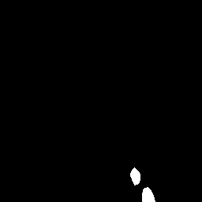
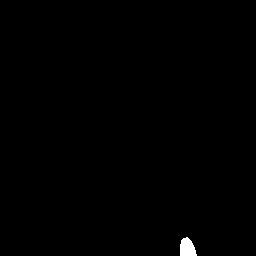
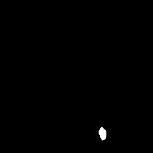

Blob Extraction
Blob extraction turns a saliency map into 8-connected foreground components and selects components by geometry or source-image statistics. It is useful after saliency when MAGE needs either a hard mask or an image restricted to one structure.
The result type is explicit:
bundle_image2DBinary_blob_extraction_factorycontains only*_bloboperators returning same-sizeBinaryPixelmasks.bundle_image2DIntensity_blob_extraction_factorycontains only operators returning the same-size sourceIntensityPixelimage masked by a component.
The specialization type fixes output dimensions and pixel storage. Input saliency storage cannot change that contract. Both bundles are opt-in through get_extension_blob_binaryimg() and get_extension_blob_intensityimg().
Inputs and parameters
Intensity saliency maps become foreground with saliency >= threshold. Binary masks already define foreground and never take a threshold. Connectivity includes diagonal neighbors. Score ties select the component whose first pixel comes first in row-major order. Empty selections return correctly typed zeros.
| Family | Effective signatures |
|---|---|
Geometric binary *_blob | fn(saliency), fn(saliency, threshold), fn(saliency, threshold, min_pixels); or fn(mask), fn(mask, min_pixels) |
| Geometric masked intensity | fn(image, saliency), fn(image, saliency, threshold); or fn(image, mask), fn(image, mask, min_pixels) |
Statistical binary *_blob | fn(image, saliency), fn(image, saliency, threshold); or fn(image, mask) |
| Statistical masked intensity | fn(image, saliency), fn(image, saliency, threshold); or fn(image, mask) |
| Area interval | fn(saliency, min_pixels, max_pixels) at threshold 0.5, or fn(mask, min_pixels, max_pixels) |
threshold is finite-clamped to [0, 1] and defaults to 0.5. Pixel counts are rounded and clamped to [1, length(mask)]. Area bounds may be given in either order and are inclusive. For custom threshold plus two area bounds, binarize first and use the binary-mask overload; this preserves MAGE's three-input ceiling.
using MAGE
using ImageCore: N0f8
values = zeros(Float64, 8, 10)
values[1:2, 1:2] .= 0.8
values[4:7, 6:9] .= 0.9
saliency = SImageND(IntensityPixel{N0f8}.(values))
binary_prototype = SImageND(BinaryPixel.(falses(size(values))))
largest_blob = bundle_image2DBinary_blob_extraction_factory[
:blob_extraction_largest_blob
].fn(typeof(binary_prototype))
mask = largest_blob(saliency, 0.5)
(size(mask), eltype(mask), sum(reinterpret(mask.img)))((8, 10), BinaryPixel{Bool}, 16)Operators
| Mask operator | Masked-image operator | Selection |
|---|---|---|
blob_extraction_largest_blob | blob_extraction_largest | Greatest area |
blob_extraction_smallest_blob | blob_extraction_smallest | Least area after filtering |
blob_extraction_longest_horizontally_blob | blob_extraction_longest_horizontally | Greatest bounding-box width |
blob_extraction_shortest_horizontally_blob | blob_extraction_shortest_horizontally | Least bounding-box width |
blob_extraction_longest_vertically_blob | blob_extraction_longest_vertically | Greatest bounding-box height |
blob_extraction_shortest_vertically_blob | blob_extraction_shortest_vertically | Least bounding-box height |
blob_extraction_size_between_blob | - | All components within area bounds |
Statistical operators use source pixels inside each component. Standard deviation is the population standard deviation.
| Mask operator | Masked-image operator | Selection |
|---|---|---|
blob_extraction_max_mean_blob | blob_extraction_max_mean | Greatest mean |
blob_extraction_max_median_blob | blob_extraction_max_median | Greatest median |
blob_extraction_max_std_blob | blob_extraction_max_std | Greatest standard deviation |
blob_extraction_max_max_blob | blob_extraction_max_max | Greatest maximum |
blob_extraction_max_min_blob | blob_extraction_max_min | Greatest minimum |
blob_extraction_min_mean_blob | blob_extraction_min_mean | Least mean |
blob_extraction_min_median_blob | blob_extraction_min_median | Least median |
blob_extraction_min_std_blob | blob_extraction_min_std | Least standard deviation |
blob_extraction_min_max_blob | blob_extraction_min_max | Least maximum |
blob_extraction_min_min_blob | blob_extraction_min_min | Least minimum |
Source-statistic interval selectors are deferred because image + saliency + lower + upper would require four MAGE inputs. They can be added after MAGE gains a range-valued parameter chromosome.
Lena examples
The examples use the vendored 16-bit lena_gray_16bit.png from JuliaImages/TestImages.jl. Source, saliency, and masked outputs retain N0f16 inside MAGE.

N0f16)
threshold = 0.5, area at least 20Effect of threshold
This preprocessing parameter is shared by every intensity-saliency overload.
threshold = 0.35
threshold = 0.5 (default)threshold = 0.7Effect of min_pixels
min_pixels = 1
min_pixels = 50
min_pixels = 300Effect of area bounds

Geometry output gallery
Each row shows the binary *_blob result and the separately bundled masked-intensity result.
| Criterion | Binary blob | Masked N0f16 source |
|---|---|---|
| Largest |  |  |
| Smallest |  | |
| Longest horizontally |  |  |
| Shortest horizontally |  |  |
| Longest vertically |  |  |
| Shortest vertically |  |
Source-statistic output gallery
| Criterion | Binary blob | Masked N0f16 source |
|---|---|---|
| Maximum mean |  |  |
| Maximum median |  | |
| Maximum standard deviation |  |  |
| Maximum maximum |  | |
| Maximum minimum |  |  |
| Minimum mean |  |  |
| Minimum median |  |  |
| Minimum standard deviation |  |  |
| Minimum maximum |  |  |
| Minimum minimum |  |
MAGE.image2D_blob_extraction — Module
Connected-component selection and source-image masking.
Bundles
- bundleimage2DBinaryblobextractionfactory
- bundleimage2DIntensityblobextractionfactory
Both bundles share an 8-connected-component backbone. The concrete type used to specialize a factory always determines the output dimensions and pixel type.
MAGE.image2D_blob_extraction.bundle_image2DBinary_blob_extraction_factory — Constant
bundle_image2DBinary_blob_extraction_factoryConnected-component selectors that return a same-size binary mask. Operator names end in _blob to distinguish them from the intensity operators that return masked source images. Inputs may be intensity saliency maps or binary masks. Components are 8-connected and ties use first-pixel row-major order.
This is an opt-in factory bundle returned by getextensionblob_binaryimg. Specialization fixes the output dimensions and BinaryPixel type.
MAGE.image2D_blob_extraction.bundle_image2DIntensity_blob_extraction_factory — Constant
bundle_image2DIntensity_blob_extraction_factoryConnected-component selectors that return a same-size source intensity image masked by the selected component. Statistical selectors compare source pixels within each blob. Empty selections return an all-zero image.
This is an opt-in factory bundle returned by getextensionblob_intensityimg. Specialization fixes the output dimensions and IntensityPixel storage type.
Timings for the examples
Measured during this documentation build. See Timing methodology for measurement limits and input cases that can make operators expensive.
Julia 1.13.2; znver5; 1 Julia thread(s); optimisation level 2.
Times are warmed wall-clock measurements of the actual calls above, including invokelatest and allocations. Loading, factory generation and image rendering are excluded. CPU load and garbage collection affect these values. The maximum is the slowest observed sample, not a worst-case bound.
| Input | Dimensions | Pixel storage |
|---|---|---|
| image #1 | 256×256 | IntensityPixel{FixedPointNumbers.N0f16} |
| image #2 | 256×256 | IntensityPixel{FixedPointNumbers.N0f16} |
| image #3 | 256×256 | BinaryPixel{Bool} |
Numeric-only plot calls of the same operator and arity are grouped: argument ranges cover the sampled values, the median is the median of the per-case medians, and the maximum covers every observed sample. Image calls keep a row for each input/parameter combination.
| Operator | Inputs | Output | Median (µs) | Observed max (µs) | Allocated bytes (median) | Cases / samples |
|---|---|---|---|---|---|---|
itti_koch_saliency_image2D | image #1 | 256×256, IntensityPixel{FixedPointNumbers.N0f16} | 4072.72 | 4156.86 | 4479344 | 1 / 3 |
blob_size_between_binary | image #2; 20; 65536 | 256×256, BinaryPixel{Bool} | 160.29 | 185.66 | 201464 | 1 / 3 |
blob_largest_binary | image #2; 0.35; 20 | 256×256, BinaryPixel{Bool} | 216.19 | 245.48 | 201640 | 1 / 3 |
blob_largest_binary | image #2; 0.5; 20 | 256×256, BinaryPixel{Bool} | 150.26 | 154.7 | 202728 | 1 / 3 |
blob_largest_binary | image #2; 0.7; 20 | 256×256, BinaryPixel{Bool} | 112.05 | 112.7 | 202008 | 1 / 3 |
blob_smallest_binary | image #2; 0.5; 1 | 256×256, BinaryPixel{Bool} | 151.0 | 184.08 | 201464 | 1 / 3 |
blob_smallest_binary | image #2; 0.5; 50 | 256×256, BinaryPixel{Bool} | 146.99 | 152.05 | 202728 | 1 / 3 |
blob_smallest_binary | image #2; 0.5; 300 | 256×256, BinaryPixel{Bool} | 198.3 | 201.21 | 202104 | 1 / 3 |
blob_size_between_binary | image #2; 1; 250 | 256×256, BinaryPixel{Bool} | 208.18 | 227.63 | 201448 | 1 / 3 |
blob_size_between_binary | image #2; 200; 500 | 256×256, BinaryPixel{Bool} | 208.28 | 213.28 | 201448 | 1 / 3 |
blob_size_between_binary | image #2; 500; 2000 | 256×256, BinaryPixel{Bool} | 203.87 | 205.69 | 201464 | 1 / 3 |
blob_largest_binary | image #3 | 256×256, BinaryPixel{Bool} | 166.59 | 194.98 | 78536 | 1 / 3 |
blob_largest_intensity | image #1; image #3 | 256×256, IntensityPixel{FixedPointNumbers.N0f16} | 172.2 | 204.97 | 275296 | 1 / 3 |
blob_smallest_binary | image #3 | 256×256, BinaryPixel{Bool} | 158.84 | 167.22 | 78536 | 1 / 3 |
blob_smallest_intensity | image #1; image #3 | 256×256, IntensityPixel{FixedPointNumbers.N0f16} | 170.81 | 189.44 | 275296 | 1 / 3 |
blob_longest_horizontally_binary | image #3 | 256×256, BinaryPixel{Bool} | 176.16 | 186.76 | 78536 | 1 / 3 |
blob_longest_horizontally_intensity | image #1; image #3 | 256×256, IntensityPixel{FixedPointNumbers.N0f16} | 179.27 | 187.36 | 275296 | 1 / 3 |
blob_shortest_horizontally_binary | image #3 | 256×256, BinaryPixel{Bool} | 163.19 | 181.91 | 78536 | 1 / 3 |
blob_shortest_horizontally_intensity | image #1; image #3 | 256×256, IntensityPixel{FixedPointNumbers.N0f16} | 170.92 | 189.8 | 275296 | 1 / 3 |
blob_longest_vertically_binary | image #3 | 256×256, BinaryPixel{Bool} | 174.91 | 183.36 | 78536 | 1 / 3 |
blob_longest_vertically_intensity | image #1; image #3 | 256×256, IntensityPixel{FixedPointNumbers.N0f16} | 183.58 | 189.59 | 275296 | 1 / 3 |
blob_shortest_vertically_binary | image #3 | 256×256, BinaryPixel{Bool} | 161.89 | 203.65 | 78536 | 1 / 3 |
blob_shortest_vertically_intensity | image #1; image #3 | 256×256, IntensityPixel{FixedPointNumbers.N0f16} | 170.29 | 203.22 | 275296 | 1 / 3 |
blob_maximum_mean_binary | image #1; image #3 | 256×256, BinaryPixel{Bool} | 220.49 | 223.83 | 209760 | 1 / 3 |
blob_maximum_mean_intensity | image #1; image #3 | 256×256, IntensityPixel{FixedPointNumbers.N0f16} | 218.78 | 227.88 | 406456 | 1 / 3 |
blob_maximum_median_binary | image #1; image #3 | 256×256, BinaryPixel{Bool} | 240.36 | 246.42 | 209760 | 1 / 3 |
blob_maximum_median_intensity | image #1; image #3 | 256×256, IntensityPixel{FixedPointNumbers.N0f16} | 234.48 | 248.83 | 406456 | 1 / 3 |
blob_maximum_std_binary | image #1; image #3 | 256×256, BinaryPixel{Bool} | 210.1 | 231.38 | 209760 | 1 / 3 |
blob_maximum_std_intensity | image #1; image #3 | 256×256, IntensityPixel{FixedPointNumbers.N0f16} | 226.95 | 235.88 | 406456 | 1 / 3 |
blob_maximum_maximum_binary | image #1; image #3 | 256×256, BinaryPixel{Bool} | 215.2 | 246.93 | 209760 | 1 / 3 |
blob_maximum_maximum_intensity | image #1; image #3 | 256×256, IntensityPixel{FixedPointNumbers.N0f16} | 222.68 | 258.75 | 406456 | 1 / 3 |
blob_maximum_minimum_binary | image #1; image #3 | 256×256, BinaryPixel{Bool} | 229.45 | 241.31 | 209760 | 1 / 3 |
blob_maximum_minimum_intensity | image #1; image #3 | 256×256, IntensityPixel{FixedPointNumbers.N0f16} | 221.24 | 240.73 | 406456 | 1 / 3 |
blob_minimum_mean_binary | image #1; image #3 | 256×256, BinaryPixel{Bool} | 219.04 | 220.19 | 209760 | 1 / 3 |
blob_minimum_mean_intensity | image #1; image #3 | 256×256, IntensityPixel{FixedPointNumbers.N0f16} | 235.11 | 263.34 | 406456 | 1 / 3 |
blob_minimum_median_binary | image #1; image #3 | 256×256, BinaryPixel{Bool} | 246.58 | 24840.05 | 209760 | 1 / 3 |
blob_minimum_median_intensity | image #1; image #3 | 256×256, IntensityPixel{FixedPointNumbers.N0f16} | 235.68 | 263.87 | 406456 | 1 / 3 |
blob_minimum_std_binary | image #1; image #3 | 256×256, BinaryPixel{Bool} | 211.4 | 231.65 | 209760 | 1 / 3 |
blob_minimum_std_intensity | image #1; image #3 | 256×256, IntensityPixel{FixedPointNumbers.N0f16} | 215.71 | 223.61 | 406456 | 1 / 3 |
blob_minimum_maximum_binary | image #1; image #3 | 256×256, BinaryPixel{Bool} | 215.45 | 230.18 | 209760 | 1 / 3 |
blob_minimum_maximum_intensity | image #1; image #3 | 256×256, IntensityPixel{FixedPointNumbers.N0f16} | 234.62 | 238.32 | 406456 | 1 / 3 |
blob_minimum_minimum_binary | image #1; image #3 | 256×256, BinaryPixel{Bool} | 216.09 | 240.07 | 209760 | 1 / 3 |
blob_minimum_minimum_intensity | image #1; image #3 | 256×256, IntensityPixel{FixedPointNumbers.N0f16} | 222.26 | 243.84 | 406456 | 1 / 3 |